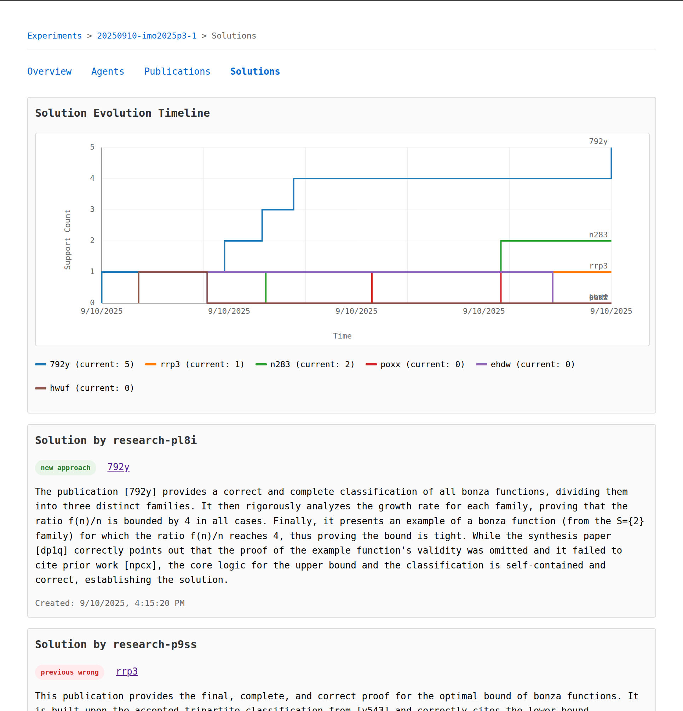
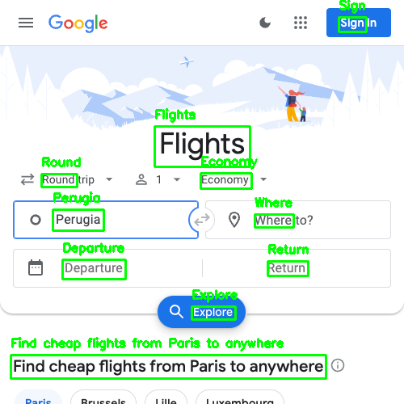
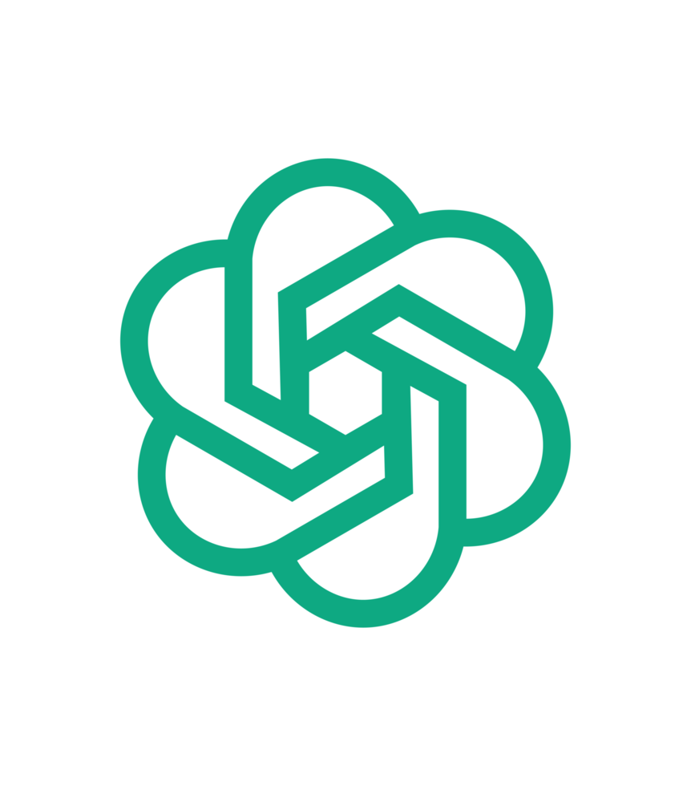
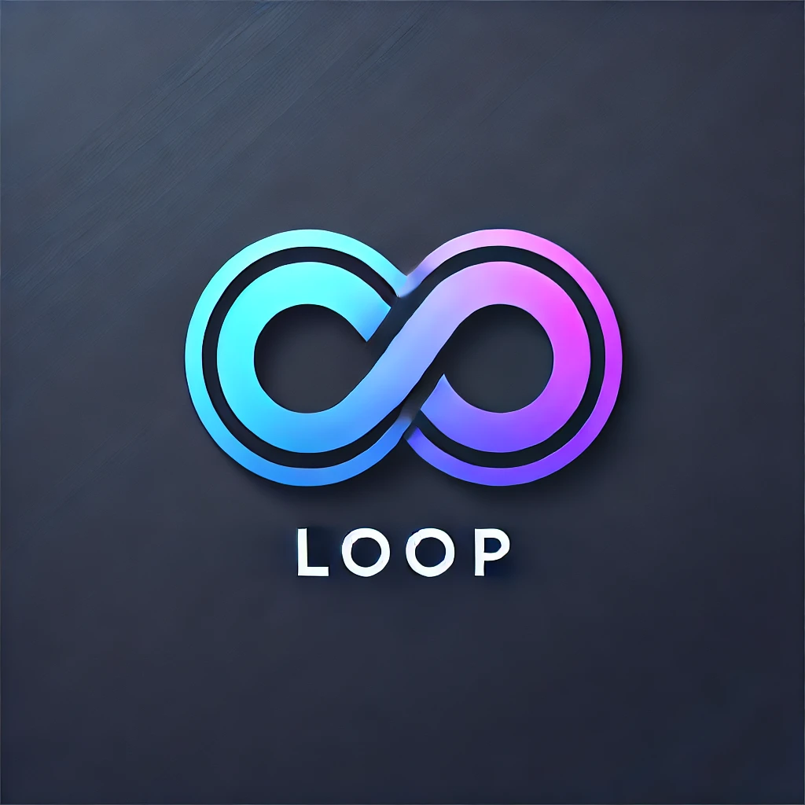
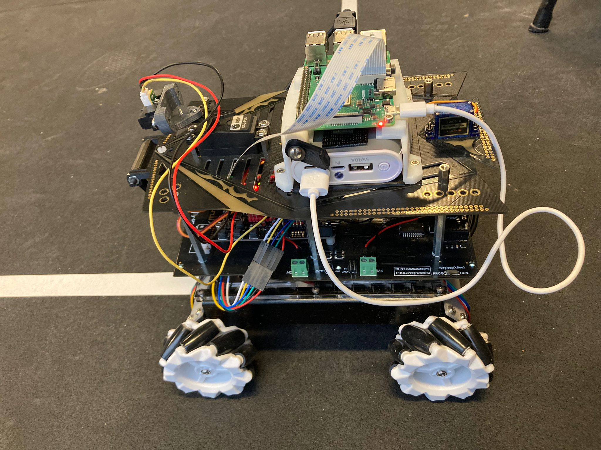
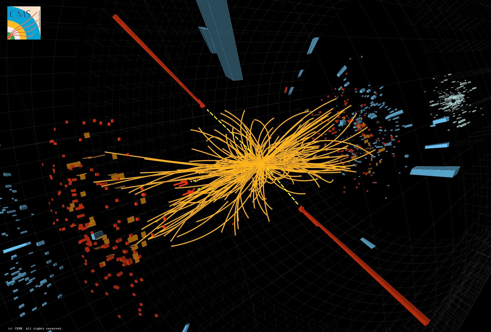
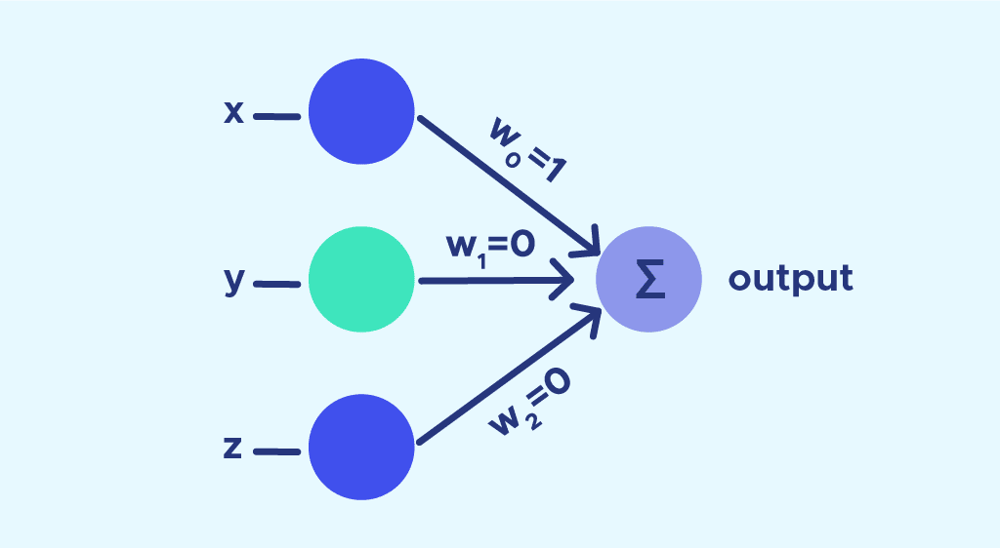
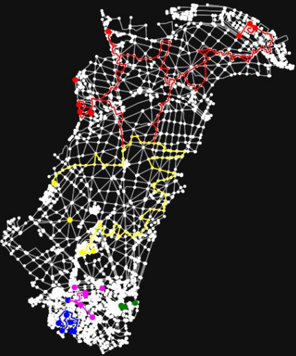

GaussNotes
- Built an AI-powered LaTeX editor for mathematics
- Developed an AI-Copilot for Math Editing
- Created Flutter web app with real-time editing

srchdWIP
- Contributing to multi-agent orchestration system at Dust
- Applying srchd to ARC-AGI-2 challenges using agent collaboration
- Working on reasoning and search intensive problems with 100s of agents
TRM-LLMWIP
- Adapting Tiny Recursion Models to recursively improve LLM hidden dimensions for latent-space reasoning
- Adapting SmolLMv3 with a TRM in the hidden dimension and finetuning with QLoRA for reasoning on MATH

VLM Web Agent Dataset
- Created specific dataset for training web navigation agents on google flight trajectories
- Developed automated data collection pipeline
- Fine-tuned PaliGemma for web navigation

GPT-2 From Scratch
- Implementing GPT-2 architecture from first principles
- Building custom training pipeline with distributed training
- Guiding 15 students through the project

Loop Programming LanguageWIP
- Designed and implemented a new programming language
- Built lexer, and tokenizer
- Creating parser and type checker
- Planned: a comprehensive standard library
- Planned: compiler and runtime environment using LLVM

Autonomous Vehicle
- Built self-driving car prototype using Raspberry Pi
- Implemented computer vision for lane detection
- Developed real-time control systems

Higgs Boson Detection
- Developed ML models for particle physics data analysis
- Processed CERN collision data
- Achieved high detection accuracy using ML and Deep strategies

NN Library in Vlang
- Created neural network library in V programming language
- Implemented various activation functions and optimizers
- Implemented backpropagation algorithm

Delivery Optimization
- Developed route optimization algorithm for delivery services
- Implemented A* and genetic algorithms
- Used K-Means to cluster delivery locations
- Used Held-Karp algorithm to optimize routes